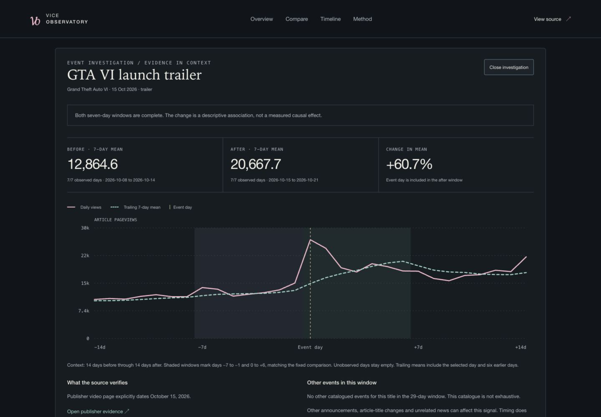

Data engineering / Interactive research / 2026
Vice Observatory
A cultural moment, observed one day at a time.
An independent GTA VI attention observatory built from public Wikipedia pageviews. Every event investigation pairs its chart with source evidence, explicit coverage limits and the snapshot behind the numbers.
Independent portfolio project · AI-assisted implementation with Codex · No paid API keys

The problem
Attention is easy to overclaim.
How did article traffic change around a trailer or announcement? How does a launch window compare with other releases? Answering those questions takes more than a chart: the dates need sources, incomplete windows must stay unavailable, and every displayed result needs a reproducible input.
This project measures English Wikipedia article pageviews. It does not measure sales, unique readers, players or sentiment. Event timing supports descriptive comparisons, not causal conclusions.
Architecture
From public evidence to a verified view.
The collector, analysis and interface share a snapshot contract. The browser checks the data and analysis identities before it renders.
- 01 / Acquire
Public sources
Python + curl collect Wikimedia pageviews. Publisher references identify events; a MediaWiki audit exposes title and redirect limits.
- 02 / Preserve
Immutable snapshots
Exact responses, acquisition receipts and SHA-256 hashes retain the evidence. Invalid or incomplete inputs fail validation.
- 03 / Analyze
Fixed comparisons
One protocol defines before/after windows, release alignment and past-only baseline predictions. Nulls stay distinct from zero.
- 04 / Present
Browser verification
A single publication checkpoint binds data, analysis and audit evidence. Vanilla JavaScript renders charts, tables and shareable investigations.
Daily publication, with a last-good fallback
GitHub Actions refreshes in an isolated candidate, runs the checks, commits the results and deploys to GitHub Pages. The public demo reads that publication. Failed acquisition retains the last verified data; an unavailable or corrupt publication triggers a visibly labeled bundled fallback.
Inspect the publication workflow ↗Engineering decisions
Keep the evidence inspectable.
- Why exact article titles?
- Redirects and renamed articles can change what a historical series measures. The audit shows those limitations. Alias traffic is not silently summed or described as unique readers.
- Why two simple predictors?
- Yesterday’s count and the preceding week’s mean are useful, reproducible baselines. Both see only observations before the target day and are scored on the same dates.
- Why a fixed before/after window?
- Seven complete days before an event are compared with event day through day +6. A missing day, incomplete window or zero denominator can make the change unavailable. The chart provides 14 days of context on either side without changing that rule.
- Why a static frontend?
- A dependency-free interface keeps the public demo portable. Data updates happen in the publication pipeline, while browser-side hashes catch mismatched or damaged snapshots.
Results and limits
The baseline remains worth keeping.
At the November 11, 2026 expansion checkpoint, yesterday’s count had lower full-window MAE than the trailing-week mean in all 19 historical release windows. Equal-game WAPE was 19.5% versus 42.4%. WAPE is an error ratio; lower is better. The weekly mean still performed better in GTA V’s three-day re-release window.
This is a purposive, retrospective cohort. It does not establish performance on unseen launches or provide a prospective GTA VI forecast. The original-release and re-release scores remain separate, and the full findings preserve the exceptions.
Verification covers failure retention, snapshot matching, date completeness and calendar gaps, plus keyboard and mobile browser checks. An early cross-version replay failure exposed a floating-point summation difference; accurate summation now keeps the analysis reproducible across Python 3.11 and 3.13.
Stack
Small runtime. Inspectable system.
Python standard library · curl · JavaScript ES modules · SVG · HTML/CSS · Node test runner · GitHub Actions · GitHub Pages · Sites